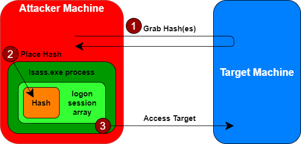

Pass the Hashes
With pass-the-hash technique attack, the attacker can gain access
to the password hashes and use them directly for authentication. This kind of attack, is most often applied against
Windows targets, although this kind of flaw is also found in some other systems, such as vulnerable web
applications
The attacker may grab the password hashes by dumping them from a Windows SAM database (a process
that requires admin privileges) or by dumping a database from a domain controller.
How work the Pass the Hash technique
1. The attacker steals password hashes from the target environment
2. The attacker instead of
cracking those passwords, strips off the hash for a given user (likely one in the administrator's group) and
carefully places it in the memory of the Local Security Authority Subsystem Service (LSASS) of an
attacker-controlled machine
3. The attacker can simply use various Windows file and print sharing tools to
access the target system, with Windows automatically presenting the user's credentials to the target, thereby
bypassing any need for providing an actual password.

Why use Pass the Hash technique
This type of attack require that the attacker have admin privileges to get access to the hashes in
the first place(Step 1).
But if the attacker already has admin
privileges, why bother using pass-the-hash to obtain, well, the same admin privileges?Because with
pass-the-hash have flexible access to the machine, without requiring any time-consuming password
cracking.
Which Hashes use
Use one of the tools seen in
Passwords
Dumping Tools to dump the hashes of the machine and check for each account if you can Pass the Hash
Note(
source): if when we dump the
hashes only NTLM is available (for example its a 15+ character password or through GPO they specify NTLM response
only), simply replace the ****NOPASSWORD**** with 32 0’s for
example:
******NOPASSWORD*******:8846f7eaee8fb117ad06bdd830b7586c
replaced with
00000000000000000000000000000000:8846f7eaee8fb117ad06bdd830b7586c
Possible errors:If we have as output
STATUS_ACCESS_DENIED is because "SMB signing" is enabled (as we will seen in
Increase
Security chapter). Good for the company :)
PS> reg query HKEY_LOCAL_MACHINE\System\CurrentControlSet\Services\LanmanServer\Parameters /v RequireSecuritySignature
PS> reg add HKEY_LOCAL_MACHINE\System\CurrentControlSet\Services\LanmanServer\Parameters /v RequireSecuritySignature /t REG_DWORD /d 0 /f
For more information see also
How
Increase security against → NTLM relay attack using SMB
Bibliography:
• Pass-the-Hash in Windows 10:
https://www.sans.org/white-papers/33283/• Pass-the-hash
attacks: Tools and Mitigation:
https://www.sans.org/white-papers/39170/
{kind=link}